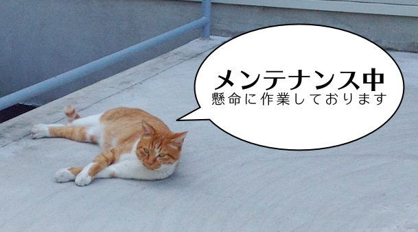

テキスト比較ツール difff《ﾃﾞｭﾌﾌ》
ver.6.1
English
| Japanese
旧バージョン (ver.5)
【サービス停止】2020年3月13日(金)17:00～3月14日(土)17:00

新着情報：
2017-08-07 HTTPSによる暗号化通信に対応 -
https://difff.jp/
2015-06-17 ﾃﾞｭﾌﾌの結果を公開する機能を追加 (ver.6.1) -
説明
2014-03-14 トップページURLを
http://difff.jp/
に変更
2014-03-12 ITmediaニュース -
STAP細胞問題で活躍、テキスト比較ツール「デュフフ」とは
2013-12-12 使い方の動画 -
difff《ﾃﾞｭﾌﾌ》を使って文章の変更箇所を調べる
2013-03-12 全面リニューアル (ver.6) -
変更点
2013-01-11
英語版
を公開
2012-10-22 ソースを公開 -
GitHub
2012-04-16 GIGAZINE -
日本語対応で簡単に差分が確認できるテキスト比較ツール「difff(ﾃﾞｭﾌﾌ)」
2012-04-13 全面リニューアル。左右で段落がずれないようにした (ver.5)
2008-02-18 日本語対応 (ver.4)
2004-02-19 初代 difff 完成 (ver.1)
Last modified on Mar 13, 2020 by
@meso_cacase